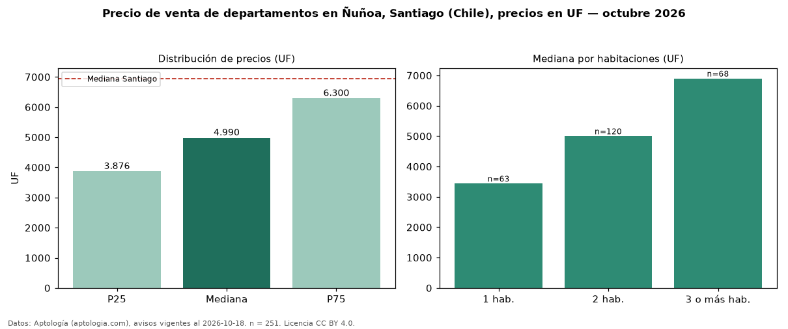

Precio de venta de departamentos en Ñuñoa, Santiago (Chile), precios en UF — octubre 2026
Con 251 avisos vigentes, el precio mediano de departamentos en venta en Ñuñoa, Santiago (Chile) es UF 4.990. Eso es 28 % por debajo de la mediana de Santiago para departamentos (UF 6.950). Por metro cuadrado, la mediana es UF 82,53/m² (n = 161 avisos con área), 5 % por encima de Santiago (UF 78,67/m²). Con el precio por m² de arriendo del mismo segmento (UF 0,30/m² al mes), la rentabilidad bruta implícita es 4,4 % anual (aproximación con medianas de ofertas distintas). El área mediana anunciada es 61 m². El segmento con más oferta es el de 2 habitaciones (120 avisos, mediana UF 5.000); pasar de 1 habitación a 3 o más habitaciones cambia la mediana +101 %. La mitad central de los avisos va de UF 3.876 a UF 6.300 (razón 1,6), una dispersión moderada. Datos: Aptología (aptologia.com), CC BY 4.0 — https://www.aptologia.com/cl/venta/santiago/nunoa. Archivos: PDF, CSV con las cifras y gráfica PNG.

| Avisos únicos | 251 |
|---|---|
| Percentil 25 | COP 3.876 |
| Mediana | COP 4.990 |
| Percentil 75 | COP 6.300 |
| Mediana por m² | COP 82 |
Fuente: avisos vigentes de portales inmobiliarios recopilados por Aptología, deduplicados (mínimo 30 avisos únicos por celda). Precios pedidos, no cerrados. Fecha: 2026-10-18.